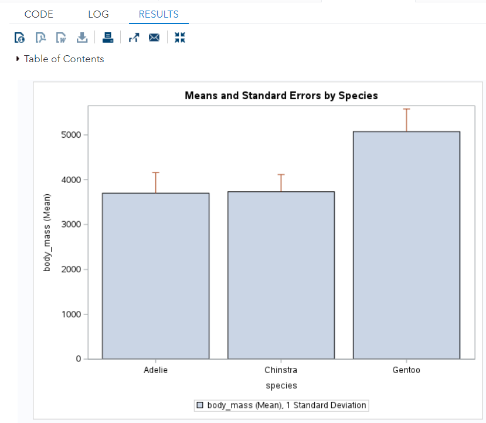

Chapter 7 Basic SAS Graphics
Making high quality statistical graphics is not an easy task in early versions of SAS. Since SAS 9.2, ODS graphicswas introduced and supported by several SAS products (see the following list).
The current SAS license at WCU has a few SAS products and allof them support ODS graphics.
The OnDemand SAS Studio (free) has much longer list of SAS products than the current WCU’s SAS license.
We will not systematically introduce SAS ODS (Output Deliver System) and ODS hraphics, instead, we only demonstrate hpw to use SAS PROC SGPLOT, PROC SGSCATTER, PROC SGPANEL to create basic statistics graphics such as bar charts, scatter plots, line graphs, etc.
Quite different from the traditional SAS graphics, graphs created with ODS graphics will be in Results Window, not in Graph Window. We can double‐click on the graphics icon to view the file, using local windows graphics viewer.Graphs will be automatically be saved as .png (portable network graphics) format
files that are
* Raster graphics;
* Compact format;
* Usable in most windows applications.
For convenience, we still use the penguin data set as our working data set to make various statistics graphics.
https://raw.githubusercontent.com/pengdsci/sta553/main/w02-penguins.csv
FILENAME pguin URL "https://raw.githubusercontent.com/pengdsci/sta553/main/w02-penguins.csv";
PROC IMPORT DATAFILE = pguin
OUT = penguin
DBMS = CSV
REPLACE;
GETNAMES = YES;
RUN;
DATA new_penguin; /* define a new data set */
SET Penguin; /* copy the data original data*/
body_mass = input(body_mass_g, 8.); /* conversion */
flipper_length = input(flipper_length_mm, 8.);
bill_depth = input(bill_depth_mm, 8.);
bill_length = input(bill_length_mm, 8.);
RUN;We will only include the minimum graphical features in all graphics. More complex SAS graphics will be discusses late if time permits.
7.1 Boxplot
Box plot is a graphical representation of five-number-summary. It is used to get rough idea of distribution of the underlying continuous variable.
7.1.1 Basic Box Plot
The next example draws a basic vertical box-plot.
TITLE "Vertical Box-plot of Body Mass Index";
PROC SGPLOT DATA = new_penguin;
VBOX body_mass;
RUN;7.1.2 Boxplots for Categories
If we want to compare the distributions of body mass index among three species of penguins, the follow code will create three box plots for the purpose of comparisons.
TITLE "Vertical Box-plot of Body Mass Index by species";
PROC SGPLOT DATA = new_penguin;
VBOX body_mass / category= species;
RUN;7.1.3 Panel Box Plot
Further, we could also compare the distribution between species across island. The following panel box plots serve the purpose.
TITLE "Panel Box-plot of Body Mass Index by species across island";
PROC SGPANEL DATA = new_penguin;
PANELBY island / ROWS = 1 COLUMNS = 3;
VBOX body_mass / category= species;
RUN;7.2 Bar Charts
Bar charts are used to visually display the distribution of categorical variable. This section will illustrate several different bar chart for different purposes. There are three categorical variables in the penguin data set, we will use them in different examples.
7.2.1 Basic Bar Chart for One Variable
We first make a bar cart for species.
TITLE "Vertical Baar Chart of Species";
PROC SGPLOT DATA = new_penguin;
VBAR species;
RUN;7.2.2 Stacked Bar Charts
A stacked bar chart can be used to compare the distributions of two categorical variables.
TITLE "Stacked Bar Chart of Species";
PROC SGPLOT DATA = new_penguin;
VBAR species/GROUP= sex;
RUN;7.2.3 Bar Charts with Means and Error Bars
In some fields such as health and biological sciences, it is common to visualize means and standard deviations (standard errors) of different groups for comparison. The bar chart of means and errors is the right choice.
TITLE "Means and Standard Errors by Species";
PROC SGPLOT DATA = new_penguin;
VBAR species/RESPONSE = body_mass
LIMITSTAT = stddev
LIMITS = upper
STAT = mean;
RUN;